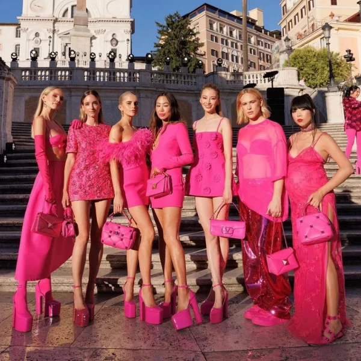

Ultimas notícias

Junto ao filme, Barbie trás tendencia "Barbiecore" que bomba nas redes sociais.
saiba mais em:
Barbiecore

Saudi Fashion Commission anuncia planos para a semana da moda de outubro em Riade. Veja mais em:
Fashion
network
Conheça os aneis de noivado mais icônicos da Tiffany & Co. e quanto eles custam:
Aneis Tiffany & Co.

vai apresentar seu próximo desfile Métiers d'Art em Manchester veja materia inteira em:
Chanel notícias
Só da ele! Jimin integrante do BTS se torna embaixador de mais uma marca de luxo. Veja mais:
Jimin X Dior
Kering adquire participação de 30% na Valentino. Saiba mais em:
Kering

'Jeito de cowboy': rodeios como 'espetáculo' e grandes shows fizeram moda 'country' entrar no
cotidiano do brasileiro. Saiba mais em:
Moda
Country

Moda 'plus size' avança no Brasil, desafiando preconceitos. Saiba mais em:
Moda
Plus Size

Modelo desabafa sobre uso de IA e desvalorização da profissão 'Não é só tirar fotos'. Veja mais em:
Desabafo
IA

Modelo trans vence o Miss Holanda e disputará o Miss Universo 2023. Veja mais em:
Miss
holanda